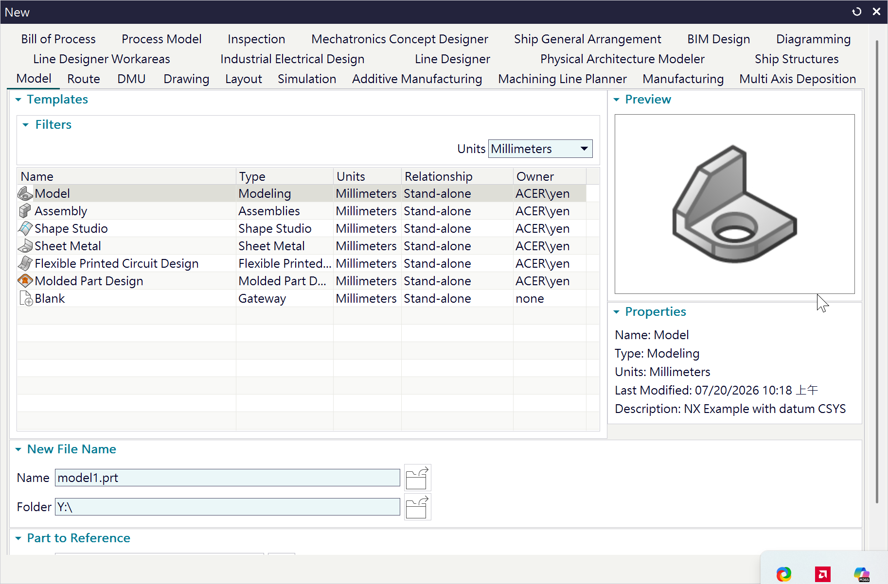
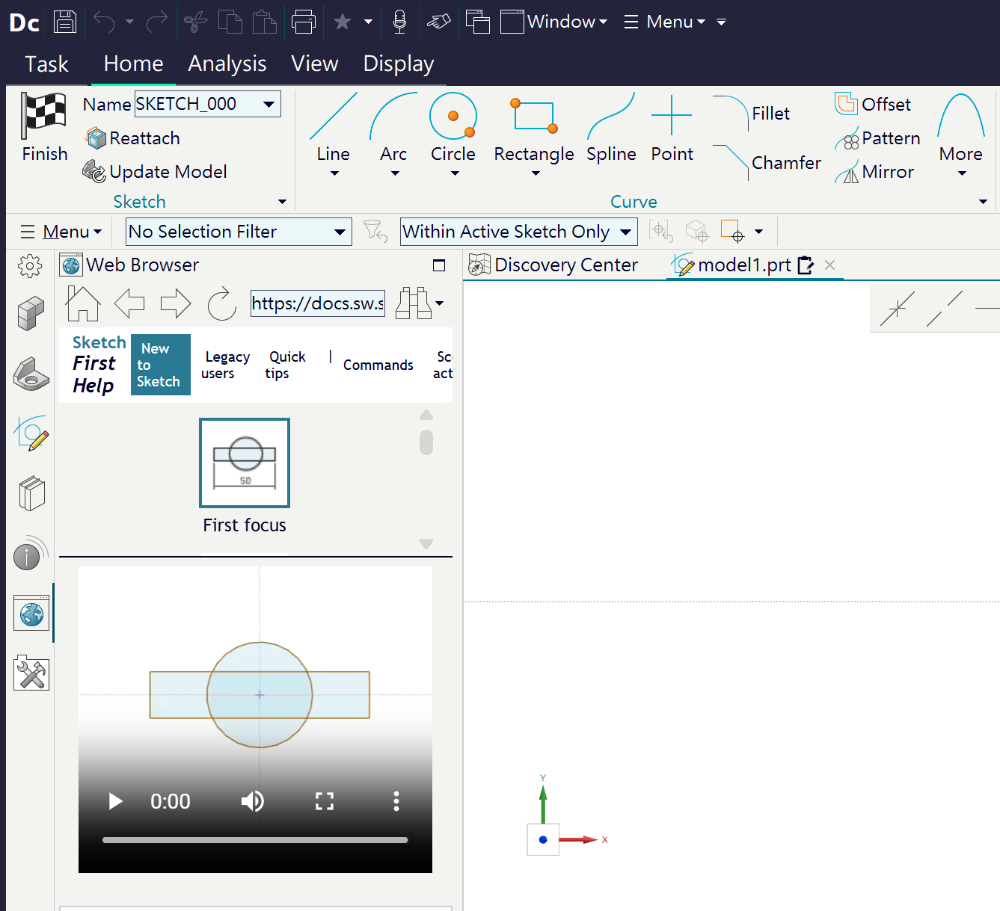
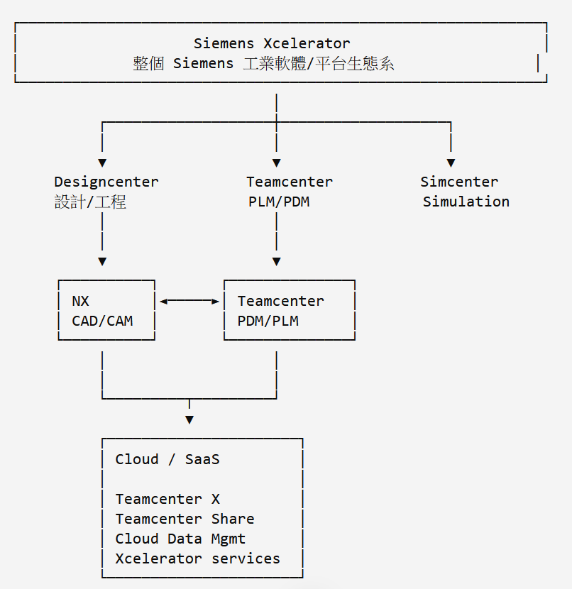
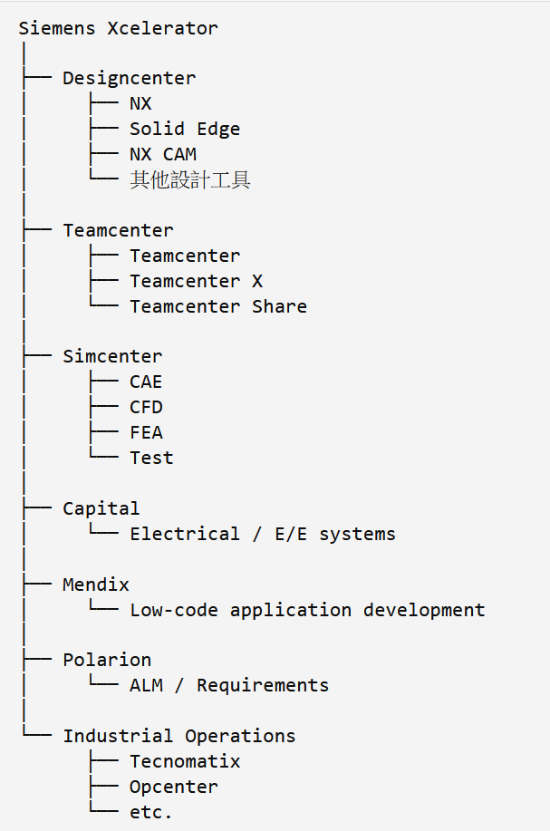
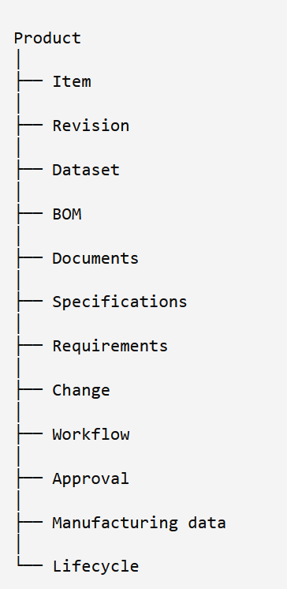

NX <<
Previous Next >> docs
NX2512
NX2512 CAE 內建 Simcenter Nastran、Simcenter FLOEFD 與 Simcenter Motion。
NX2512 Help
NXOpen_Getting_Started.pdf
NXOpen Python Reference Guide
Open C Programmer's Guide
Open C Reference Guide
SNAP_Getting_Started.pdf
NX Programming Tools (NX2406)
Knowledge Fusion Language Reference
Overview of Programmer’s Guide
Designcenter NX 2512 的 Designcenter_user.dpv (使用者偏好設定) 位於 Y:\home_ipv6\appdata\Local\Siemens\Designcenter2512，參考內容:
<?xml version="1.0" encoding="UTF-8"?>
<?xml-stylesheet type="text/xsl" href="Designcenter_user.xsl"?>
<PrefValues defaultLockStatus="unlocked">
<Pref Application="Gateway" Category="General" Tab="Miscellaneous" displayValue="No" modified="2026-09-04T03:19:13" name="NX_EarlyAccessFeatureEnable" title="Early Access Features - Enable Early Access Features" value="false"/>
<Pref Application="Gateway" Category="General" Tab="Data Privacy" displayValue="No" modified="2026-09-04T03:17:45" name="NX_ProductExcellenceProgram" title="Product Excellence Program - Participate" value="false"/>
<Pref Application="Gateway" Category="General" Tab="Miscellaneous" displayValue="No" modified="2026-09-04T03:19:13" name="PMAN_Spreadsheet_Excel_Enable_2007_Macros" title="Enable Macros for Excel 2007 and Later" value="false"/>
<Pref Application="Gateway" Category="General" Tab="Data Privacy" displayValue="No" modified="2026-09-04T03:19:31" name="NX_DigitalProductExperience" title="Digital Product Experience - Participate" value="false"/>
<Pref Application="Gateway" Category="General" Tab="Data Privacy" displayValue="No" modified="2026-09-04T03:19:31" name="NX_ProductExcellenceProgramMessage" title="Product Excellence Program - Display Initial Startup Message" value="false"/>
<Pref Application="Gateway" Category="User Interface" Tab="Journal" displayValue="UTF-8" modified="2026-08-22T14:16:18" name="UG_journalFileFormat" title="Journal File Format" value="3"/>
<Pref Application="Gateway" Category="User Interface" Tab="Journal" displayValue="Python" modified="2026-08-22T14:16:18" name="UG_journalLanguage" title="Journal Language" value="4"/>
</PrefValues>
設定內容:
一、隱私權與資料收集設定 (Data Privacy)
關閉 Siemens 的自動化資料收集與意見回饋機制。
NX_ProductExcellenceProgram (產品卓越計畫 - 參與)設定值： false (關閉)
說明： 不參與 Siemens 的產品卓越計畫。系統不會自動傳送軟體使用數據或錯誤回報給原廠。
NX_DigitalProductExperience (數位產品體驗 - 參與)設定值： false (關閉)
說明： 不參與數位產品體驗改善計畫，關閉相關的使用者體驗數據追蹤。
NX_ProductExcellenceProgramMessage (顯示初始啟動訊息)設定值： false (關閉)
說明： 隱藏軟體初次啟動時詢問「是否加入產品卓越計畫」的彈出提示視窗。
二、常規與安全性設定 (General / Miscellaneous)
控制新功能的開放與巨集安全性。
NX_EarlyAccessFeatureEnable (啟用早期訪問功能)設定值： false (關閉)
說明： 關閉測試版功能。系統僅會顯示正式發布的穩定功能，不會顯示或啟用還在實驗階段的 Early Access（預覽）新功能。
PMAN_Spreadsheet_Excel_Enable_2007_Macros (啟用 Excel 2007 及更高版本的巨集)設定值： false (關閉)
說明： 當 NX 與 Excel 進行資料連結（如：部件族群 Part Families 或電子表格驅動）時，停用 Excel 的巨集（Macros）執行，提升防範惡意程式的安全性。
三、延伸程式設定 (User Interface / Journal)
使用者在錄製 NX 操作腳本（Journal）時的預設開發環境。
UG_journalLanguage (日誌語言)設定值： 4 (對應顯示值：Python)
說明： 設定 NX 錄製自動化巨集與腳本時的預設程式語言為 Python（而非 VB.NET 或 C#）
UG_journalFileFormat (日誌檔案格式)設定值： 3 (對應顯示值：UTF-8)
說明： 規定錄製出來的 Python 腳本檔案編碼格式為 UTF-8，確保程式碼中的中文字元或特殊符號不會變成亂碼。
由於 Designcenter NX2512 的 Python 延伸程式動態連結程式庫採 Python 3.12，可以利用其他版本的 Python 環境建立 Python 3.12 的可攜對應程式環境。
gen_portable_python312.py 可以在 SciTE 環境中執行，但是 python get-pip.py 則一定要在 python.exe 環境中執行。


Siemens 的 Designcenter NX2512 雖然仍保留 NX 商標名稱，但整體架構已經與 Cloud/Saas 的 Designcenter X 結合更加緊密，runtime 執行時 CLOUDDM (Cloud data management) 中的 Liveshare 也必須同時啟動。
NX2512 應該是採用 NX 命名的最後一個版本，2606 開始已經全面改為 Designcenter 2606，以下是 Siemens 工業軟體的平台架構:

Xcelerator 平台緊密結合近端與雲端整合機械、電子、軟體、模擬、製造、營運等領域的產品與服務。而 Teamcenter 則是其中負責產品生命週期管理的核心。
其中 Xcelerator 平台的套件產品如下:

而 Teamcenter 所管理的產品相關資料包含:

NX2512 的 CAD 部分，執行需要
- AUTOMATIC_UPDATE
- CLOUDDM
- DRAFTING
- DXFDWG
- IGES
- NXASSEMBLY
- NXBIN
- NXPARTS
- STEP203UG
- STEP214UG
- UGII
- UGOPEN
- UNFOLD
等目錄，總容量約 10GB (7z 壓縮後約 2GB)，完整安裝的 NX2512 則佔 42GB (7z 壓縮後約 10GB)，全部檔案 16 萬 4 千多個。
NX <<
Previous Next >> docs